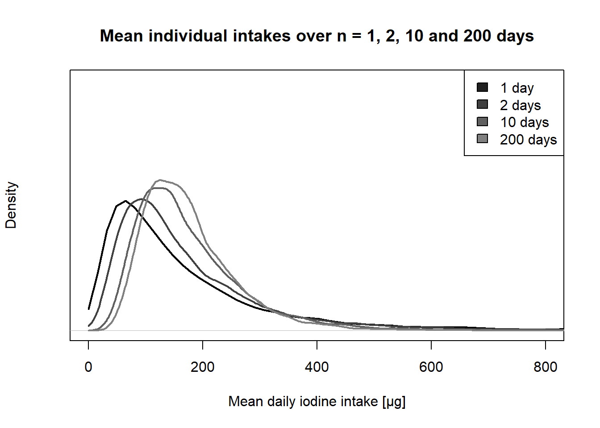

Exposure
Risk benefit assessment of iodization of salt in Norway.
This page is meant as a methodological online appendix to the exposure and scenario calculations for the project “Benefit and risk assessment of iodization of household salt and salt used in bread and bakery products”. This page has two purposes; document the approach used in the report and to aid others in understanding and possibly using this approach for their own projects.
The terms of reference for the project can be found here. The final report will be linked to here
The Risk-Benefit assessment itself has been scrutinized and approved by the Norwegian Scientific Committee in addition to having been reviewed by three experts outside the project group. This page, however, has been through far less scrutiny and may contain errors.
Prerequisites
Some basic understanding of the functioning of R is needed to follow this document. Excellent introductions to the software, as well as the usage of Rstudio is available online.
To perform this analysis in R, a few packages needs to be installed, minimally the package MCMCglmm.
## Loading required package: Matrix## Loading required package: coda## Loading required package: apeReading/compiling the data
The underlying data for the modelling are either intake data or covariates for the individuals in the survey. The intake data is calculated in the Norwegian Dietary Calculation System (KBS) and consists of daily intakes of iodine through diet (either including or exlucing supplements) and consumption of bread. For Norkost 3 (adults), two reported days are included and for Ungkost (4,9 and 13 year olds) 4 consecutive days are included.
All surveys are to a certain degree not representative of the population they are used to estimate the intake for. We are interested in the long-term (chronic) intake for the general Norwegian population, but we know that Norkost is slightly unrepresentative in that it has a higher proportion of respondents with a high level of education. We will estimate the effect of this so we can (to a certain degree at least) correct for this unrepresentativeness. If, for instance, highly educated individuals on average have a higher intake of iodine, neglecting to correct for this bias will lead to overestimation of the overall iodine intake for the Norwegian population.
In addition to level of education we expect iodine intakes to be dependent on sex and age, and include these as covariates in our models. For Ungkost, age and level of education are fixed for each age-group and are not included in the modelling. Only Norkost will be presented to exemplify the approach. Ungkost is in structure similar, but differs in that it has fewer covariates, but more sampled days.
All intakes and covariates are compiled into a data.frame with a row for each individual-day. So for Norkost 3, with 1787 individuals participating, the data.frame has 3574 rows. Each row as an individual identifier ($ind), $sex, $wgt (weight), $day (a or b), $age, $educ (level of education 0 means some time in college og university, 1 - no studies in college/university), $bread (consumption of bread), $iodine_wS (iodine intake including supplements) and $iodine_woS (iodine without supplements). $iod_y is only a mock variable used for programming purposes.
A quick look at the data and a simple model.
To get a quick overview of the structure of the data;
head(dataNK3)## ind sex wgt day age educ bread iodine_wS iodine_woS iod_y
## 1 11001 female 63 a 60 0 46.0 468.13 468.13 468.13
## 2 11003 male 82 a 32 0 172.8 46.32 46.32 46.32
## 3 11005 female 85 a 39 0 60.0 18.88 18.88 18.88
## 4 11006 male 99 a 63 0 120.0 70.45 70.45 70.45
## 5 11007 male 78 a 36 0 405.0 134.28 134.28 134.28
## 6 11008 male 101 a 36 0 142.0 360.03 288.03 288.03The main goal of doing mixed models on dietary intake data is to decompose the variance in intakes into variance between individuals and variance within individuals. We are trying to use the surveys to estimate the long-term intakes, and thus ‘remove’ the variance within individuals, i.e. the day-to-day variation. In practice this is done by introducing random effects for individuals. The simplest model, will be this model1 <- MCMCglmm(log(iodine_woS)~1, random=~ind, data=dataNK3)
In this model the mean log iodine intake will be modelled, including a ‘random effect’ for each individual and a residual for each day. Here we have no covariate (the model formula is ~1), and have set ~ind as random effect.
Then a summary of this model can be shown.
summary(model1)##
## Iterations = 3001:12991
## Thinning interval = 10
## Sample size = 1000
##
## DIC: 8839.312
##
## G-structure: ~ind
##
## post.mean l-95% CI u-95% CI eff.samp
## ind 0.1909 0.1513 0.228 447.4
##
## R-structure: ~units
##
## post.mean l-95% CI u-95% CI eff.samp
## units 0.5678 0.5263 0.6051 990.5
##
## Location effects: log(iodine_woS) ~ 1
##
## post.mean l-95% CI u-95% CI eff.samp pMCMC
## (Intercept) 4.795 4.763 4.825 1300 <0.001 ***
## ---
## Signif. codes: 0 '***' 0.001 '**' 0.01 '*' 0.05 '.' 0.1 ' ' 1The three main parts of a model fit are, in MCMCglmm terms, called the G-structure, the R-structure and the Location effects. The first is the estimated variance of the random effects, i.e. to which degree individuals differ among themselves in their usual (log) intake. The R-structure is the residuals, i.e. to which degree individuals varies in intake from day to day. The Location effects deal with the overall mean.
This is a simple model of daily intakes, and the (Intercept) parameter is estimated to be around 4.8 on a log scale, i.e. approximately 121 µg in daily intakes. It is crucial to understand what this number is; it is not long-term intake for the population, it is the expectation of the log(intake) for any single day. Since intake is skewed, and bounded by 0, the long-term intake will be higher. This is a fundamental aspect of transforming the modelled intake from real to log (as we do here), or by any other power-function (as the Cox-transformation).
Extracting a long-term intake
To get at a long-term intake we need to use the estimated variances; one between individuals (estimated to be about 0.19 on the log scale), and the one within individuals (estimated to be about 0.57 on the log scale). From these values one can surmise that most of the variability on the log scale are between individuals, in fact about three times as much (again on a log scale, so they are slightly harder to interpret on the real scale).
So if we want to ‘simulate’ a new individuals iodine intake, we then use the estimated parameters. Firstly we use the (Intercept), which is 4.796. Then we add a deviation from this, i.e. we sample a new ‘random effect’ using the estimated distribution of random effects. In the example here the ind is approximately 0.19, i.e. individuals are (on the log scale) estimated to differ among eachother following a normal distribution with mean 0 and a variance of 0.19. Drawing one random number from such a normal distribution then yields a ‘simulated’ mean daily intake for a particular individual. Now we have one individual’s expected log intake. Next step is to simulate the realized daily intakes. The model have estimated that the day-to-day variance in intakes is about 0.57. In our approach we set a long-term intake to be over 365 simulated days. The reason why we draw this many days is that we want the long-term intake for each simulated individual on the real scale, and since the day-to-day variation is normal on the log-scale, it is not just the exponentiated estimated paramter (the mean of the log of x is not the same as the log of the mean, remember?).
So if we want the long-term intake predicted by this model fit we need to sample the estimated parameters (the whole thing is Bayesian), then use these parameters to ‘simulate’ individuals (with a drawn ‘random effect’) and draw a large number of days for each simulated individuals. Then we have a set of daily intake on a log scale, and the mean of these on the real scale is thus mean(exp(log_intakes)).
In R we construct a function that takes a fitted simple model as input (mcmc_fit), and the number of individual (n_ind, default is 100, i.e. if we don’t give a different number when we call this function it will simulate 100), and number of days over which we want the long-term mean (n_days).
drawIod <- function(mcmc_fit,n_ind=100,n_days=365){
# A quick function used to sample from a fitted MCMCglmm model with no covariates and simple
# random effects.
xi <- sample(dim(mcmc_fit$Sol)[1],n_ind,replace=T);
# This is just a sampled index into the array of estimated parameters in the Bayesian output from the model (X)
iod <- array(NA,n_ind)
for (ii in 1:n_ind){
# Loop over all individuals.
# exp(Sampled (intercept) + Randomly drawn Individual level random effect + n_days number of residuals)
iod[ii] <- mean(exp(mcmc_fit$Sol[xi[ii]] + rnorm(1,mean=0,sd=sqrt(mcmc_fit$VCV[xi[ii],1])) +
rnorm(n_days,mean=0,sd=sqrt(mcmc_fit$VCV[xi[ii],2]))))
}
return(iod)
}So this function(drawIod) can be called to simulated mean intakes for any number of simulated individuals over any number of days. We can calculate the Observed Individual Mean (OIM) of the intake, and see how the distributions compare when simulating the same number of individuals (n=1787) and two days.
# Calculating the observed individual means.
oims <- sapply(unique(dataNK3$ind),function(ii){mean(dataNK3[which(dataNK3$ind==ii),]$iodine_woS)});
# Simulating 1787 individuals, with 2 days each.
simulated_2days <- drawIod(model1,n_ind=1787,n_days=2);
plot(density(oims,from=0),xlim=c(0,1000),main='Iodine intake, mean of 2 days',xlab='Mean daily iodine intake [µg]',lwd=2,yaxt='n')
lines(density(simulated_2days,from=0),col='grey',lwd=2);
legend('topright',fill=c('black','grey'),legend=c('OIMS','Simulated'))
This figure shows a smoothed distribution of the calculated observed individual means (OIMs) and simulated intakes for the same number of individuals over 2 days using the fitted model.
Getting long-term intake.
The simple model fitted can be used to simulate long-term intake, i.e. over a large number of days (remember that the model is fitted to, and can be used to simulate daily intakes, but we want a mean of many). The figure below shows three distributions of intakes, simulating 10 000 individual means using 1,2,10 and 200 days.
sim_days <- sapply(c(1,2,10,200),function(ii){drawIod(model1,n_ind=1e4,n_days=ii)});
plot(density(sim_days[,1],from=0),xlim=c(0,800),ylim=c(0,0.01),main='Intakes over 1, 2, 10 and 200 days',yaxt='n',xlab='Mean daily iodine intake [µg]')
for (ii in 2:4){lines(density(sim_days[,ii],from=0),col=rgb(ii/8,ii/8,ii/8))}
legend('topright',legend=c('1 day','2 days','10 days','200 days'),fill=sapply(1:4,function(ii){rgb(ii/8,ii/8,ii/8)}))
We can also quickly look at some percentiles of these simulations. The tails are becoming narrower (as expected). Please note that this is not a particularly good model of the data, and was explicitly made simple for exposition of the usage of MCMCglmm and R to make the estimates.
| 5% | 50% | 95% | |
|---|---|---|---|
| 1 day | 28 | 120 | 503 |
| 2 day | 44 | 135 | 437 |
| 10 days | 66 | 155 | 369 |
| 200 days | 77 | 162 | 332 |
Building up with covariates.
Does the daily intakes of iodine and bread differ between the sexes? A quick boxplot of the raw intakes shows that it looks like it does.
So how can we take this into account, and how does sex really matter? If we only include sex into the model, there are in fact three ways in which it could enter: * As a fixed effect, i.e. that males and females have different mean log daily intakes. * As structuring the random effects, i.e. that males differ between individuals in a different ways than females. * As structuring the residuals, i.e. that males have a different day-to-day variance in intakes than females.
Below shows how to make these changes to fit a MCMCglmm model.
model2a <- MCMCglmm(log(iodine_woS)~sex,random=~ind,data=dataNK3)
model2b <- MCMCglmm(log(iodine_woS)~sex,random=~idh(at.level(sex,1)):ind+idh(at.level(sex,2)):ind,data=dataNK3)
model2c <- MCMCglmm(log(iodine_woS)~sex,random=~idh(at.level(sex,1)):ind+idh(at.level(sex,2)):ind,
rcov=~idh(at.level(sex,1)):units+idh(at.level(sex,2)):units,data=dataNK3)When looking at the summary of this last model with all possible structuring by sex, we see that males have a higher intake overall. The fixed effect sexmale listed in under the heading Location effects is approximately 0.3. This means that on a log scale males have a mean log intake 0.3 higher than females, and since this is on the log scale males have about 34 percent higher intakes of iodine.
summary(model2c)##
## Iterations = 3001:12991
## Thinning interval = 10
## Sample size = 1000
##
## DIC: 8792.604
##
## G-structure: ~idh(at.level(sex, 1)):ind
##
## post.mean l-95% CI u-95% CI eff.samp
## at.level(sex, 1).ind 0.1492 0.09924 0.1929 374.5
##
## ~idh(at.level(sex, 2)):ind
##
## post.mean l-95% CI u-95% CI eff.samp
## at.level(sex, 2).ind 0.1896 0.1438 0.2485 509.2
##
## R-structure: ~idh(at.level(sex, 1)):units
##
## post.mean l-95% CI u-95% CI eff.samp
## at.level(sex, 1).units 0.5547 0.5031 0.6002 613.3
##
## ~idh(at.level(sex, 2)):units
##
## post.mean l-95% CI u-95% CI eff.samp
## at.level(sex, 2).units 0.585 0.5369 0.639 735.3
##
## Location effects: log(iodine_woS) ~ sex
##
## post.mean l-95% CI u-95% CI eff.samp pMCMC
## (Intercept) 4.6538 4.6091 4.6989 1000 <0.001 ***
## sexmale 0.2915 0.2237 0.3517 1000 <0.001 ***
## ---
## Signif. codes: 0 '***' 0.001 '**' 0.01 '*' 0.05 '.' 0.1 ' ' 1The other estimated parameters indicate that not only do males have a higher iodine intake than females on average, but they also have a larger degree of variability between individuals, and a slight indication that the variance within individuals is also higher for males. Plotting the estimated means and variance also show this;